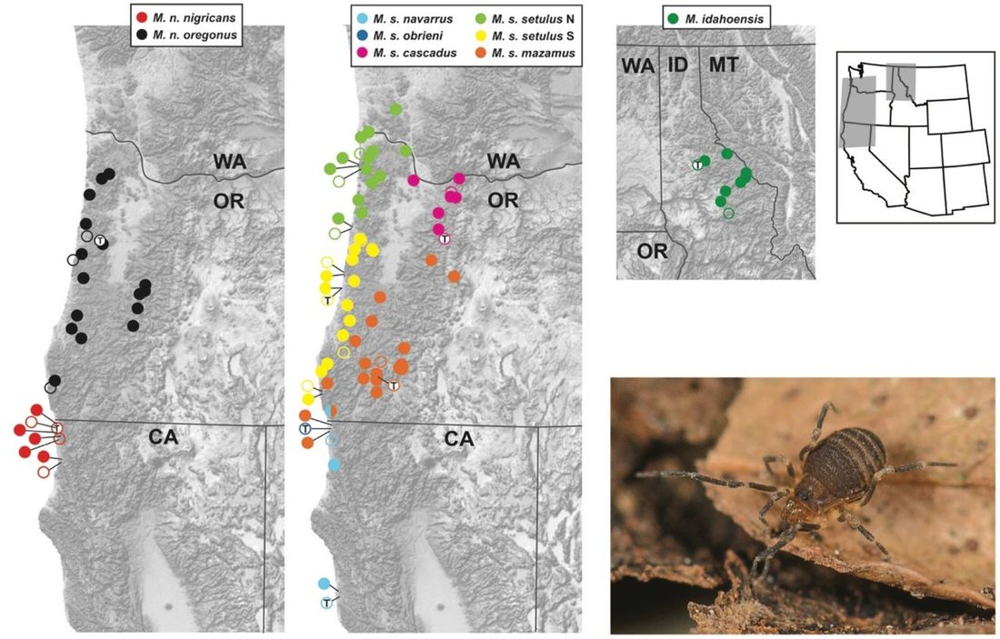
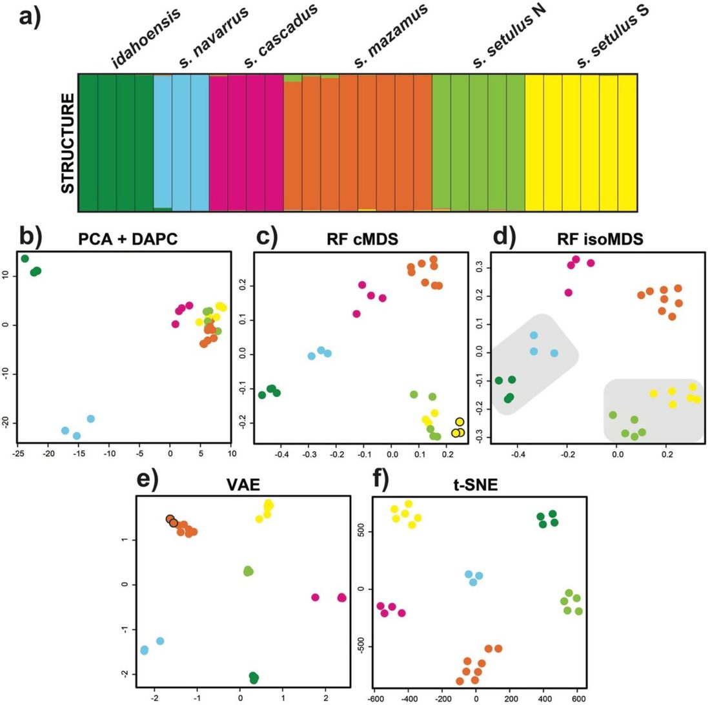
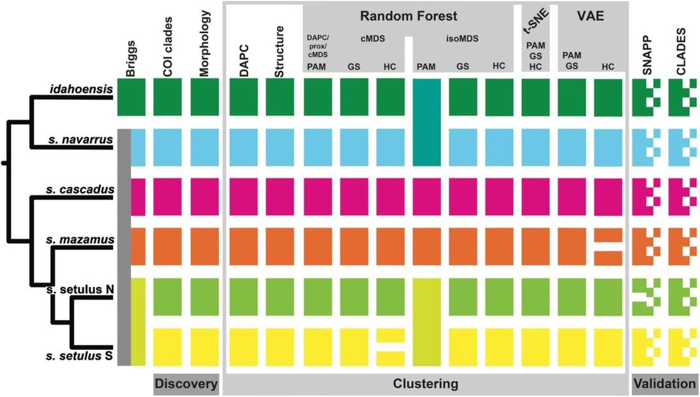
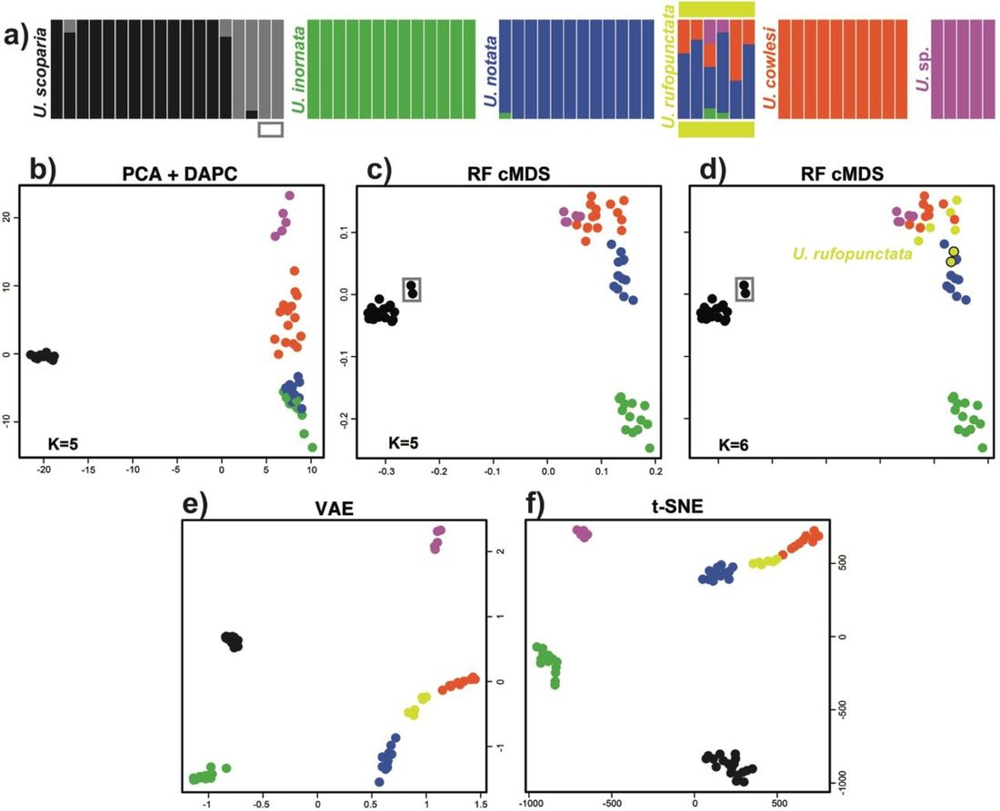
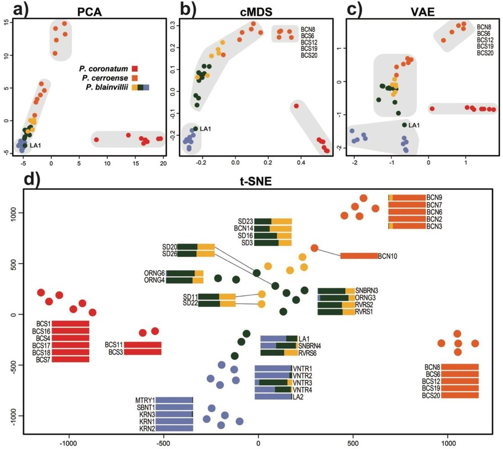

Unified Model of Protein Evolution
A demonstration of unsupervised machine learning in species delimitation
Materials and Methods
Study System
For this study we utilized a short-range endemic (SRE; Harvey 2002 ) arachnid taxon in the order Opiliones (commonly called harvestmen). SRE taxa tend to have low dispersal ability and high ecological constraints, which leads to high population genetic structure and allopatric distributions, likely driven by niche conservatism ( Wiens and Graham 2005 ). These biological characteristics make SRE taxa ideal candidates for species delimitation analyses, with high probability for new species discovery. Studies in SRE harvestmen (and SRE taxa in general) tend to show a great deal of underestimated diversity with numerous harvestmen species still being described even from well-studied areas (e.g., Derkarabetian and Hedin 2014 ; DiDomenico and Hedin 2016 ; Starrett et al. 2016 ; Emata & Hedin 2016 ).
The Pacific Northwest endemic genus Metanonychus Briggs, 1971 is a cryophilic harvestman that prefers moist forests, typically found underneath rotting logs/bark and in leaf litter. The genus and all species/subspecies were described by Briggs (1971) , and currently includes three species: M. idahoensis, M. setulus with five subspecies ( setulus, mazamus, cascadus, navarrus , and obrieni ), and M. oregonus with two subspecies ( oregonus and nigricans ) ( Fig. 1 ). Metanonychus is an ancient lineage; in a recent phylogenomic analysis of the superfamily Travunioidea (which contains Metanonychus ), more genetic divergence is seen between the two samples of Metanonychus than in divergences between the vast majority of pairs of sister genera across all Travunioidea ( Derkarabetian et al. 2018 ). Despite the ancient origin of this group, relatively few species were described, even though all “subspecies” are easily differentiated based on apparently fixed differences in male genitalic morphology ( Briggs 1971 ). Recent systematic studies on related taxa corroborate the conservative nature of subspecies in these SRE harvestmen ( Derkarabetian and Hedin 2014 ). As such, and more importantly, we consider Metanonychus species limits relatively straightforward where the species are “obvious” making this an excellent system to test ML approaches.

Species Delimitation Workflow
We consider species as “separately evolving metapopulation lineages” ( de Quieroz 2007 ), that in practice are genetic clusters of samples corresponding to monophyletic lineages that show fixed morphological differences. For the discovery phase, our a priori species are based on inferred well supported COI clades and fixed differences in male genitalic morphology. We use two popular discovery-based genetic clustering approaches as “standards” to assess the utility and results of three ML methods. All SNP-based clustering analyses utilized the adegenet/STRUCTURE formatted file (.str) as input, which allowed minimal file format conversion from “standard” to ML approaches.
Species Discovery
The COI gene was sequenced for at least one sample from every collecting locality, plus two outgroups from the sister genus Sclerobunus , using multiple primer combinations (online Appendix 1). DNA was extracted using the Qiagen DNeasy kit (Qiagen, Valencia, CA) using 2–3 legs, PCR experiments followed Derkarabetian and Hedin (2014) and amplified fragments were Sanger sequenced at Macrogen USA. The Sanger-sequenced COI dataset was supplemented with COI sequences derived as “UCE-bycatch” (e.g., Zarza et al. 2017 ; Hedin et al. 2018 ) for all UCE samples (see below). COI sequences were manually aligned and a phylogeny was reconstructed using RAxML v.8 ( Stamatakis 2014 ) with 500 bootstrap replicates and the GTRGAMMA model. COI divergence dating was conducted with BEAST 2.4.8 ( Bouckaert et al. 2014 ) using two calibrations: a strict clock calibrated at 0.0178 (Papadopolou et al. 2010), and a date calibration for the outgroups S. nondimorphicus (from coastal Oregon/Washington) and S. idahoensis (from Idaho), a well-known biogeographic break typically dated to 2–5 MY ( Brunsfeld et al. 2001 , and references therein), which was set to a uniform distribution of (2, 5).
The male genitalia in harvestmen tend to be species-specific and have been used in systematic studies across all taxonomic levels since the mid-1900s. We examined male genitalia for multiple samples of all described species/subspecies using standard scanning electron microscopy techniques. Images were taken using the FEI Quanta 450 FEG environmental SEM at the San Diego State University Electron Microscope Facility.
Sequence Capture and SNPs
The number of studies utilizing UCEs in species delimitation and SNP-based population level analyses are increasing (e.g., Smith et al. 2013 ; Blaimer et al. 2016 ; Harvey et al. 2016 ; McCormack et al. 2016 ; Newman and Austin 2016 ; Zarza et al. 2016 ; Starrett et al. 2017 ; Hedin et al. 2018 ). Extractions were conducted as above, except in most cases whole bodies were used in digestions. Sequence capture of UCE loci followed the protocols available from the ultraconserved.org website and as in Starrett et al. (2017) and Derkarabetian et al. (2018) using the Arachnida 1.1Kv1 myBaits kit (Arbor Biosciences) designed by Faircloth (2017) . Sequencing was done at the Brigham Young University DNA Sequencing Center on a HiSeq 2500 with 125 bp paired-end reads.
Raw reads were processed using phyluce (Faircloth 2005), adapter removal and quality control was done with an illumiprocessor wrapper ( Faircloth 2013 ), and contigs were assembled with Trinity version r2013-02-25 ( Grabherr et al. 2011 ). When matching contigs to probes, conservative values of 82 and 80 were used for minimum coverage and minimum identity, respectively, to filter potential non-target contamination ( Bossert and Danforth 2018 ). Loci were aligned using MAFFT ( Katoh and Standley 2013 ) and trimmed using gblocks ( Castresana 2000 ; Talavera and Castresana 2007 ) with settings –-b1 0.5 –-b2 0.5 –-b3 10 –-b4 4. All loci were manually inspected in Geneious ( Kearse et al. 2012 ) to fix obvious alignment errors and filtered for obvious non-homologs. Contigs corresponding to COI were identified by a local BLAST search in Geneious against available Metanonychus COI sequences. Although not used in species delimitation, a concatenated matrix of UCE loci with 70% taxon coverage was used to reconstruct a phylogeny using RAxML with 500 bootstraps and the GTRGAMMA model.
SNP datasets were created from sequence capture reads using published approaches (e.g., Zarza et al. 2017 ). The sample with the highest number of recovered UCE loci was used as a reference genome ( M. idahoensis , OP2432). After adapter removal and quality control, reads for all samples were aligned to the reference using bwa ( Li and Durbin 2009 ), the resulting SAM files were sorted using samtools ( Li et al. 2009 ), PCR duplicates were identified and removed using picard ( http://broadinstitute.github.io/picard ), and all BAM files were merged. The Genome Analysis Toolkit 3.2 (GATK; McKenna et al. 2010 ) was used to realign reads and remove indels and SNPs were then recalibrated using “best practices” ( van der Auwera et al. 2013 ). After recalibration SNPs were called and vcftools ( Danecek et al. 2011 ) was used to create SNP datasets which varied in the percent of taxon coverage needed to include a SNP (50% and 70%). One random SNP from each locus was selected and the script adegenet_from_vcf.py (github.com/mgharvey/seqcap_pop) was used to create STRUCTURE-formatted (.str) files.
Standard Genetic Clustering
As a comparison for the efficacy of unsupervised ML methods in inferring structure and optimal clustering, we used two popular approaches. First, STRUCTURE version 2.3.4 ( Pritchard et al. 2000 ) was run for 1 million generations and 100,000 burnin on K values ranging from 2–10, with five replicates each. Structure Harvester ( Earl and vonHoldt 2012 ) was used to determine optimal K via calculation of DK ( Evanno et al. 2005 ) and Clumpak ( Kopelman et al. 2015 ) was used to visualize output ( http://clumpak.tau.ac.il/ ). Second, we used the adegenet R package ( Jombart 2008 ; Jombart and Ahmed 2011 ) to conduct principal components analysis (PCA; dudi.pca function) and determine the optimal number of clusters and cluster assignment with discriminant analysis of principal components (DAPC) on scaled data.
Unsupervised ML Visualization
Three unsupervised ML approaches were used for clustering (see Table 1 ). We executed RF through the randomForest R package ( Liaw and Wiener 2002 ), extracting the scaled data from DAPC to a separate matrix. There are two important parameters associated with RF. The ntree parameter, the number of classification trees to create, was set to 5000. The mtry, the number of splits in the classification tree, was left at default for a classification analysis, which is square root the number of variables. The resulting proximity matrix was then used in both classic MDS (cMDS) and isotonic MDS (isoMDS). cMDS was executed using the MDSplot function in the randomForest package and isotonic MDS was conducted using the isoMDS function in the MASS R package ( Venables and Ripley 2002 ).
VAE was implemented with a custom script utilizing the Keras python deep learning library ( https://keras.io ; Chollet 2015 ) and the TensorFlow machine learning framework ( www.tensorflow.org ; Abadi et al. 2015). As input for VAE we use SNP matrices converted via “one-hot encoding” where each nucleotide is transformed into four binary variables unique to each nucleotide (e.g., A = 1,0,0,0; C = 0,1,0,0; etc.) including ambiguities (e.g., M = 0.5,0.5,0,0) using a custom script. The VAE is composed of an encoder and a decoder. The encoder takes the one-hot encoded SNP data and infers the distribution of latent variables, given as a normal distribution with a mean (µ) and standard deviation (σ). The decoder then maps the latent distribution to a reconstruction of the one-hot encoded SNP data. As there are two latent variables, SNP data for each sample can be visualized as a reduced two-dimensional representation. Details of the VAE and the training procedure are in Supplementary File: Figure 1 .
t-SNE was executed using the R package tsne ( Donaldson 2016 ). After preliminary testing, several parameters were specified: maximum iterations (max_iter=5000), perplexity=5, initial dimensions (initial_dims=5), and number of dimensions for the resulting embedding (k=2). The maximum iterations value is relatively straightforward to determine as the KL divergence (a measure of the difference between high and low dimensional representations) should stabilize at a minimum. Perplexity is a measure of the balance between the local and global elements of the data; essentially how many neighbors a particular sample can have. This is a somewhat subjective parameter, where lower perplexity will produce tight well separated clusters, and higher values will produce more diffuse less distinguishable clusters. However, results and clusters are typically robust across a wide range of perplexity values ( Pedregosa et al. 2011 ) and methods have been introduced to make perplexity selection automatic ( Cao and Wang 2017 ). With large datasets it is recommended to perform dimensionality reduction on the data via PCA or a similar algorithm prior to implementing t-SNE ( Pedregosa et al. 2011 ). As such, we perform t-SNE using the results of the initial PCA as input.
With RF and t-SNE, we also tested three different types of input format using the 70% SNP dataset. First, the SNPs were represented as raw nucleotides with ambiguities in standard IUPAC coding, extracted directly from .vcf files using the vcf2phylip script (github.com/edgardomortiz/vcf2phylip). Second, the raw SNPs were converted to haplotypes using the script SNPtoAFSready.py (github.com/jordansatler/SNPtoAFS). Third, the raw unphased nucleotides were converted into numerical format via one-hot encoding. For the first two datasets, the Ns were coded as blank, and PCA could not be conducted as the variables are categorical. As such, t-SNE was run using the cMDS output.
Unsupervised ML Clustering
To assess the performance of clustering based on ML results relative to widely used STRUCTURE and DAPC approaches, four sets of clustering analyses were conducted using RF, VAE, and t-SNE outputs. First, to confirm that cluster assignments are equivalent to DAPC and STRUCTURE assignments, PAM clustering was conducted using the cluster R package ( Maechler et al. 2018 ) with the optimal K selected from DAPC. The next three clustering methods test whether the optimal K can be inferred correctly relying solely on unsupervised ML results. PAM clustering was done on all output, including both the proximity matrix and cMDS for RF, across K of 2–10 with the optimal K having the highest average silhouette width ( Rousseeuw 1987 ). Next, PAM clustering was conducted with the optimal K determined via the gap statistic using k-means clustering implemented in the factoextra R package ( Kassambara and Mundt 2017 ). Finally, optimal K and clusters were determined via hierarchical clustering with the mclust R package ( Scrucca et al. 2017 ) using only components retained via the broken stick algorithm implemented in the PCDimension R package ( Coombes and Wang 2018 ).
Species validation
We implement the commonly used Bayes Factor delimitation approach (*BFD; Leaché et al. 2014 ) with SNAPP ( Bryant et al. 2012 ) using a 70% UCE SNP matrix created by the phyluce script “phyluce_snp_convert_vcf_to_snapp”. Multiple species hypotheses were tested based on current taxonomy, a priori species, ML clustering results, and an analysis where each individual specimen was treated as a unique species. SNAPP analyses were run with default settings for 100,000 generations, 10,000 burnin, and 48 steps. Each analysis was run twice to ensure consistency. Bayes Factors ( Kass and Raftery 1995 ) were calculated (2 * log likelihood difference) to determine relative support of species hypotheses.
Next, we use the RF-based program CLADES ( Pei et al. 2018 ), which uses Support Vector Machines, a type of supervised ML, to build a classifier based on labeled samples where samples are classified as either the same or different species. Several population genetic statistics are calculated for the simulated training data and the observed data, which are then treated as variables. The classifier is then used to infer whether the observed a priori species are equivalent to the same or different species. As input we use the UCE loci in two different analyses: 1) an analysis validating a priori species hypotheses (“spp” dataset); and 2) an analysis in which every individual was treated as a distinct species (“ind” dataset).
Published Datasets
Uma notata complex . – Gottscho et al. (2017) explored lineage diversification and species limits in fringe-toed lizards of the Uma notata species complex, a group with a complicated taxonomic history. Using ddRAD data they find significant levels of gene flow between multiple species and determine that U. rufopunctata is a hybrid population. Several genetic clustering algorithms were used with differing results: DAPC favored an optimal K=5 (grouping the hybrid U. rufopunctata with U. cowlesi ), while a model with admixture favored an optimal K=6 (splitting U. scoparia and showing varying levels of admixture for U. rufopunctata samples between U. cowlesi and U. notata ). We reanalyzed their data with the intention of assessing unsupervised ML clustering/visualization in the face of significant gene flow and known hybrids. The published dataset with 597 SNPs was downloaded from Dryad ( https://doi.org/10.5061/dryad.8br5c ).
Phrynosoma coronatum complex . – The coast horned lizards of the genus Phrynosoma coronatum complex have received much attention with many species hypotheses put forth (summarized in Leaché et al. 2018 ). In an integrative approach Leaché et al. (2009) recover five well supported mtDNA clades that show little concordance with nuclear loci, ultimately integrating ecology and morphology to support three species ( P. blainvillii, P. cerroense , and P. coronatum ). More recently, Leaché et al. (2018) use SNP data coupled with *BFD testing all hypotheses derived from previous research, ranging from one to six species. A five species model is given the highest support, reflecting mtDNA and splitting P. blainvillii into three groups. Here, we use unsupervised ML methods for clustering, but more importantly to demonstrate their utility as a data visualization tool in a dataset showing high uncertainty in cluster probability assignments ( fig. 1 of Leaché et al. 2018 ). Data were downloaded from dryad ( https://doi.org/10.5061/dryad.k7k4m ), and the SNP dataset in the .xml file was manually extracted and converted to .csv format for import into R.
Results
Metanonychus specimens were collected from 79 different collecting localities. A total of 117 sequences were included in COI analyses (alignment length of 1182 bp); all new COI sequences have been deposited to GenBank (XXXX -XXXX). Seventy-seven sequences were acquired via Sanger sequencing and 38 were sequenced as UCE bycatch, with five samples being sequenced by both approaches, for a total of 110 Metanonychus specimens (plus two outgroups). UCE bycatch sequences possessed no stop codons, and for those samples sequenced via Sanger and as UCE bycatch, sequences were identical. COI divergence dating supports the ancient origin of this genus dating to ∼25 Ma (Supplementary File: Fig. 2 ). The RAxML phylogeny recovers a deep split between the “ nigricans group” containing both subspecies of M. nigricans and the “ setulus group” containing M. idahoensis and M. setulus with all subspecies. Each currently named taxon is monophyletic with bootstrap support values of 100 (Supplementary File: Fig. 3 ), except the setulus subspecies is polyphyletic separated into geographically cohesive northern and southern clades, although support for relevant internal nodes are weak.


Male genitalic morphology show clear differences between all species/subspecies, including northern and southern clades of the setulus subspecies (Supplementary File: Fig. 4 ). Taken together, the discovery phase identified eight a priori species corresponding to the currently named species/subspecies (except obrieni , Appendix 1) with the setulus subspecies split into two genetically divergent, geographically cohesive clades with fixed differences in genitalic morphology.

A total of 38 Metanonychus samples were included in UCE analyses, 36 of which were newly sequenced (online Appendix 1). Raw reads for sequence capture data have been deposited to SRA (XXXX). The 70% matrix included 185 loci (average of 158 per sample) with a mean locus length of 411 bp and a total length of 75,944 bp. The UCE phylogeny similarly confirms the monophyly of the nigricans and setulus groups and recovered the same clades as COI, but all internal nodes were fully supported (Supplementary File: Fig. 3 ). The setulus subspecies is recovered as monophyletic, albeit with reciprocally monophyletic northern and southern lineages. A 50% UCE matrix (278 loci, mean locus length of 384 bp, total length of 106,786 bp), produced an identical topology (not shown).
Due to the relatively high levels of divergence in Metanonychus , preliminary exploration of SNP datasets including all 38 samples resulted in datasets with too few loci or too sparse a matrix, with M. nigricans samples missing an average of ∼60% of SNPs (∼11% average samples in the setulus group). For the purposes of demonstrating ML clustering in Metanonychus , we focus on the monophyletic setulus group with six a priori species identified in the discovery phase. The setulus group included 30 samples and the 70% SNP dataset contained 316 SNPs (average of 250 per sample), while the 50% dataset contained 1263 SNPs (average of 774 per sample).
For the 70% and 50% SNP datasets, both STRUCTURE (DK) and DAPC favored an optimal K=6 ( Fig. 2 a, b ; Fig. 3 ; Supplementary File: Fig. 5 and Fig. 6), recovering all six a priori setulus group species as distinct clusters, including the separate clades of the setulus subspecies.
Unsupervised ML
Unsupervised ML analyses were relatively quick and computationally inexpensive taking 1–3 minutes for each of the three algorithms when run locally. All ML analyses were run multiple times producing identical clustering results. For the 70% dataset, all clustering approaches for RF (cMDS and isoMDS), VAE, and t-SNE resulted in an optimal of K=6, with the exception of the cMDS with hierarchical clustering resulting in an optimal of K=7 splitting the southern clade of the setulus subspecies, and hierarchical clustering of VAE with an optimal of K=7 splitting mazamus ( Fig. 2 , Fig. 3 ). Importantly, all K=6 clustering assignments were identical to those from DAPC and STRUCTURE. For the 50% dataset, an optimal of K=6 was found for the majority of analyses (Supplementary File: Fig. 5 and Fig. 6). However, the cMDS using hierarchical clustering resulted in K=7, splitting the northern clade of the setulus subspecies, and hierarchical clustering of VAE resulted in K=7, splitting mazamus . Clustering of the 50% dataset based on isoMDS was more variable, with an optimal K=4 for hierarchical clustering and K=1 for the gap statistic. All VAE and t-SNE clusters were obvious. VAE clusters were robust, being recovered identically across five replicate analyses, and clear separation between clusters is seen when σ (standard deviation) is included (Supplementary File: Fig. 7). t-SNE clusters were robust to perplexity values from 5–25, after which samples became randomly dispersed (Supplementary File: Fig. 8). The unsupervised ML approaches produced plots with easier interpretability relative to PCA, with species clusters showing more separation in two-dimensional space. Similar plots for RF and t-SNE were obtained using input where SNPs were coded in multiple ways (Supplementary File: Fig. 9).
*BFD showed increasing likelihood with increasing species ( Table 2 ), with Bayes Factors heavily favoring the analysis in which all individual specimens were treated as distinct species (K=30). Only considering hypotheses recovered in the discovery phase, the “7N” species hypothesis was favored, recognizing all six a priori species plus two species in the northern clade of the setulus subspecies. CLADES requires that each locus have data for at least one sample within every a priori species. As a result, the “spp” dataset had 177 loci and the “ind” dataset had 12 loci. CLADES supported the species status of all six a priori species. However, species status was also supported when each sample was treated as a distinct species ( Fig. 3 ).
Uma notata complex . – All clustering based on RF with cMDS favored a K=5 scenario, with cluster assignment identical to DAPC results, with the exception of hierarchical clustering favoring an optimal K=6 ( Fig. 4 ). In this case, a distinct cluster was identified for all U. rufopunctata and two samples of U. notata . The optimal of K=6 recovered in Gottscho et al. (2017) does not differentiate U. rufopunctata , instead splitting U. scoparia . The cMDS plots do show two somewhat distinct samples of U. scoparia , which correspond to samples placed in the sixth cluster. Clustering results ranged from K=4 in PAM, lumping U. cowlesi, U. notata , and U. rufopunctata , to K=7 in some replicates of t-SNE clustered with gap statistic splitting U. scoparius . The t-SNE and VAE plots recover the hybrid species U. rufopunctata as a linear “grade” between the parental species U. cowlesi and U. notata , and assignment uncertainty of the hybrid samples are seen when σ is also visualized (Supplementary File: Fig. 7).
Phrynosoma coronatum complex . – As expected, clustering via DAPC, RF, VAE, and t-SNE with nuclear SNP data did produce groups congruent with mitochondrial clades, with the exception of P. coronatum ( Fig. 5 ). DAPC favored K=4 ( P. coronatum , southern P. cerroense , northern CA P. blainvillii , and northern P . cerroense + the rest of P. blainvillii ), while PAM clustering favored K=2. The differing cluster assignments of P. cerroense lineages reflects their polyphyly in the SNP phylogeny of Leaché et al. (2018) . While all plots arrange samples in a way reflective of their genetic similarity, the more diffuse spatial arrangement of samples in the t-SNE embedding and the σ of the VAE are particularly informative and reflective of cluster probability assignments for P. blainvillii samples ( Fig. 5d and Supplementary File: Fig. 7).

Discussion
Reconsidering (SRE) Species Delimitation
Commonly used validation approaches relying on genomic-scale data have the potential to identify population structure and oversplit taxa (e.g., Sukumaran and Knowles 2017 ), a problem that can be exacerbated when studying SRE taxa with inherently high levels of population structure. Model-based validation analyses relying on the multispecies coalescent as currently implemented (e.g., BPP, SNAPP) seek to identify separate panmictic gene pools. This approach may not be suitable for all taxa given the diversity of biological characteristics unique to particular groups or organismal types with differing degrees of population structure and isolation, etc. ( Sukumaran and Knowles 2017 ). While the issue of population structure in species delimitation has recently come under focus from a methodological perspective, the potential misinterpretation of population structure as species level divergences in empirical data has been a concern for taxonomists focusing on SRE taxa for a relatively long time (e.g., Hedin 1997 ), and continues to be so (e.g., Boyer et al. 2007 ; Bond and Stockman 2008 ; Niemiller et al. 2012 ; Barley et al. 2013 ; Satler et al. 2013 ; Fernández and Giribet 2014 ; Hedin 2015 ; Hedin et al. 2015 ).
Unsupervised ML clustering of SNP data provided reasonable species hypotheses that were largely identical to commonly used discovery-based analyses. However, when used with validation methods, the same data supported unrealistic results severely overestimating the number of species. Most importantly, clusters identified in unsupervised ML approaches obviously correspond to species, implying that cluster separation was dominated by species-level divergences and not population structure. If validation analyses show increasing support for more complex species delimitation models, up to the most unrealistically complex model possible given the data (i.e., each individual specimen as a distinct species), those analyses do not contribute useful information to the final species hypotheses. Similarly, the possibility of the most complex model being favored, whether actually tested or not, makes “support” for any less complex alternative models meaningless. If we did not run the K=30 SNAPP analysis or the “ind” analysis in CLADES, a more realistic 6–7 species hypothesis would be favored validating all a priori species, without any consideration of more complex hypotheses that are actually more likely. For Metanonychus , validation analyses were effectively ignored in the formation of final species hypotheses, and the information content of the SNP dataset was squandered, not being used to its full potential. While *BFD/SNAPP is useful for testing alternative assignment hypotheses, its use as a validation tool to determine the number of species is certainly problematic for SRE taxa, and more broadly for any taxon with significant population structure.
Because model-based validation analyses have the potential to delimit population level divergences, that does not mean they only identify population-level divergences. However, the confirmation that validation analyses are operating at the species level can only be assessed when species delimitation is conducted in an integrative framework, and we reiterate the statement by Sukumaran and Knowles (2017) that external information (i.e., different data types) are needed to confirm delimitations made based on genetic-only analyses. Ultimately, we argue that the separation of empirical species delimitation into two distinct phases (discovery and validation) limits the potential utility of the “validation” data type in informing species hypotheses in a truly integrative manner. Data types used in the discovery phase inform the a priori species hypotheses used as input for the validation phase, but the data type used in validation does not reciprocally inform the other data types. Ideal integrative taxonomy as described by Schlick-Steiner et al. (2010) utilizes multiple data types in a reciprocally illuminating framework where discordance between datasets requires consideration of the underlying biological processes.
Machine Learning in Species Delimitation
The goal of this study was to explore how well unsupervised ML methods can successfully identify clusters equivalent to species and correctly infer the expected number of clusters. We argue that species delimitation in Metanonychus was relatively “simple” showing essentially no discordance between datasets and provided an excellent study system to explore novel approaches. In an integrative framework, our results suggest that the expected number of species, determined via mitochondrial and morphological analyses, can be correctly inferred across multiple clustering algorithms using the RF distances, the latent variables of VAE, and the t-SNE embeddings. Most importantly, unsupervised ML approaches coupled with standard clustering algorithms did not oversplit the data by distinguishing samples based on population-level structure, but instead formed clear clusters equivalent to species-level divergences. While these unsupervised approaches seemingly work well with relatively clear species, their ability to correctly cluster samples in more difficult speciation scenarios (e.g., rapid and recent divergence, divergence with gene flow, etc.) remains to be tested, although results in Uma are promising.
For unsupervised RF, more consistent and “accurate” clustering was achieved using the cMDS output. Like DAPC, multiple dimensions are used to inform the optimal clustering strategy. Conversely, isoMDS by default only outputs two dimensions for clustering. isoMDS may be suitable for significantly diverged taxa, in which case it can sometimes produce a better two-dimensional visualization of the data relative to cMDS. VAE and t-SNE clusters were exceedingly obvious regardless of data type, and robust across multiple iterations and varying parameters. t-SNE was designed purely for the visualization of high dimensional data, although given a low dimensional embedding as output, clustering is an obvious application. It has been noted that t-SNE clusters, cluster size, and distances between clusters may not have any relevant meaning ( Wattenberg et al. 2016 ) and clusters should be interpreted with caution. As t-SNE does not preserve the density of actual clusters completely, density-based clustering algorithms ( Ester et al. 1996 ; Campello et al. 2013 ) may offer an improvement relative to other clustering approaches. Regardless, in the datasets used here, inferred clusters have obvious biological meaning corresponding to species which were corroborated by other analyses and data types. More consistent and accurate clustering results were obtained with the 70% taxon coverage dataset. Samples with a higher percentage of missing data might be reconstructed in closer proximity by unsupervised ML methods, regardless of phylogenetic proximity, simply because they share high levels of missing data. This is particularly the case with data converted to one-hot format where a missing SNP was coded as “0,0,0,0”, although we designed our VAE to mask missing data.
Neural networks have mostly been designed/used for identifying the latent space of images, the most relevant examples including the citizen science natural history observational platform iNaturalist ( www.inaturalist.org ) and classification of ants ( Boer and Vos 2018 ). Here we show that VAEs, which leverage neural networks to learn a probability distribution of the data, can learn phylogenetic structure with the latent variables. In contrast to t-SNE, VAEs are nicely derived from formal Bayesian probability theory, and can hence be used to score the probability that the new data belongs to a trained set of data or is a new species. The standard deviation around samples/clusters is an inherent result of a VAE analysis and visualization makes the assessment of cluster distinctiveness or uncertainty relatively straightforward. One drawback is that it is not straightforward when to stop training a VAE. Overtraining a VAE can lead to overfitting the data, which results in clusters that are still present, but the probability distribution over the data is less general, and hence cannot be used reliably for downstream analysis. One solution is to partition a small fraction of the training data as a validation set, which can be used to determine when training should be stopped, a technique in ML known as early stopping ( Goodfellow et al. 2016 ), although we use a “dropout” approach to prevent overfitting. Given results presented here, the robustness of output to parameter variation, and its Bayesian nature, VAEs are very promising for future incorporation into systematic applications.
Data visualization is an important aspect of empirical research. With genetic data, whether used as loci or SNPs, this can be in the form of a phylogeny or via a dimensionality reduction method. Regardless of whether downstream clustering is performed, unsupervised ML methods like t-SNE and VAE offer excellent options for relatively quick and informative data visualization that can help examine uncertainty in a priori groupings or recognize misidentifications and paraphyly, both of which are problematic for species hypotheses if data are destined for downstream model-based analyses. The placement of hybrid populations of Uma and the arrangement of assignment uncertainty in Phrynosoma are displayed in low-dimensional space in spatially meaningful ways. The recently developed Uniform Manifold Approximation and Projection method ( McInnes and Healy 2018 ) is a dimensionality reduction technique similar to t-SNE but with numerous benefits including better preservation of global structure and potential embedding in larger dimensional space benefitting downstream clustering.
Unsupervised ML methods do not make assumptions about data type (e.g., genetic versus morphological, etc.); data are merely treated as data. If approaches that are not specifically designed for a particular data type successfully identify/corroborate a priori species, the resulting species decisions are more robust. However, the underlying assumption is that the analyses are operating at the species level. As with many dimensionality reduction techniques, unsupervised ML methods will uncover any underlying structure regardless of the taxonomic level or type of data. As such, integrative taxonomy with multiple data types and analytical approaches is ideal. Conversely, this insensitivity to taxonomic scale makes unsupervised ML relevant to population level analyses and phylogeography as well as species delimitation in taxa across varying divergence times, for example, divergences of ∼20 Ma in the Metanonychus setulus group down to much more recent species divergences of <1 Ma reported for Uma ( Gottscho et al. 2017 ).
An additional appeal of some ML approaches is their ability to be conducted in a “semi-supervised” manner, where some samples can be labeled (e.g., assigned to a species) while others are left unassigned. For example, semi-supervised analyses could be used for species assignment of samples with unknown determination, like females of Metanonychus , or in taxa where the vast majority of specimens are known from juveniles that cannot be identified to species (e.g., Hedin et al. 2018 ). While fully supervised approaches have been used for this same reason, for example with COI barcoding (e.g., Weitschek et al. 2014 ; Archer et al. 2017 ), utilizing a semi-supervised ML approach (e.g., McInnes and Healy 2018 ) saves the need for creating a training dataset and associated assumptions. In either case, given the increasing incorporation of museum specimens in genomic analyses ( McCormack et al. 2016 ; Blaimer et al. 2016 ; Ruane and Austin 2017 ; Sproul and Maddison 2017 ) it is now feasible to directly include type specimens in species delimitation. In the case of semi-supervised methods, type specimens (or specimens from type localities, etc.) can be included in analyses as labeled data while all other samples are left unlabeled, or in a supervised approach, data from type specimens could be used in training dataset construction.
If model testing is integral to the study it seems more logical, particularly in cases where genetic data is the only reliable way to assess species limits (i.e., cryptic species), to rely on algorithms that utilize prior information in the form of training data based on parameters associated with the particular biological characteristics of a given organismal type, thus taking the biology of the organism more directly into account. For potential future analyses of SRE harvestmen using supervised ML methods, training data could consist of multiple “curated” SRE datasets where species are known and well-supported, which would then be used for SRE taxa with unknown or uncertain numbers of species. While CLADES oversplit Metanonychus supporting every individual as a species, we do not see this as a negative for the approach, but rather as imperative to create and use curated training datasets reflecting the biological characteristics of the study organism to fully leverage the power of this approach. More recently, Smith and Carstens (2018) developed delimitR, a supervised ML approach that treats species delimitation as a classification problem, using the binned multidimensional Site Frequency Spectrum as the predictor variable to build an RF classifier that can distinguish among different speciation models, the response variables, selecting the model with the most votes. Training data is simulated based on specification of several priors (guide tree, population size, divergence time, migration) either known or estimated for the particular study system. DelimitR is a promising approach as priors are used to create the simulated data for classifier construction, making the analysis more specific to the biology of the focal taxon.
In general, unsupervised ML approaches offer the benefits of better data visualization in two-dimensional space and the ability to accommodate various data types. Like current methods combining multiple data types into a single analysis (e.g., Guillot et al. 2012 ; Solis-Lemus et al. 2015 ), it may be feasible to do an integrative unsupervised ML analysis where various data types (e.g., morphological, genetic, chemical profiles, etc.) are combined into a single dataset for downstream clustering. Many ML algorithms are well-suited for species delimitation, providing promising avenues of incorporation into standard systematics protocols and excellent resources are available for implementation (e.g., http://scikit-learn.org , https://keras.io , www.tensorflow.org ). ML algorithms, even those designed for image analysis or pattern and text recognition, all seek to identify and learn the underlying structure of input data via dimensionality reduction of some form. This can be leveraged for all data types in diverse ways, for example, representing a multidimensional vector of population genetic statistics as an image to be analyzed via neural networks ( Kern and Schrider 2018 ). As recently discussed in regard to population genetics ( Schrider and Kern 2018 ), with a basic understanding of the types of ML algorithms, the applications to species delimitation become obvious and exciting with the potential to aid in all aspects of systematic biology.
Learning from Metanonychus
Multiple data types and analytical approaches favor six species in the setulus group, providing robust final species hypotheses. Although some analyses favored more than six species, we prefer more conservative species hypotheses that are robust to data and analysis type (e.g., Carstens et al. 2013 ). As a result of integrative species delimitation, we elevate all subspecies of the setulus group to full species, now consisting of M. idahoensis, M. navarrus new comb ., M. cascadus new comb ., M. mazamus new comb ., and M. setulus . In addition, all analyses supported the northern clade of the setulus subspecies as a distinct species, which we describe as M. xxxx n. sp . Derkarabetian and Hedin (Appendix 1). Based on examination of type specimens, M. obrieni is synonomized with M. navarrus (Appendix 1). The nigricans group had too few samples for reliable clustering when analyzed alone. However, both the morphological divergence seen in male genitalia and nuclear divergence supports elevating the M. nigricans subspecies to full species: M. nigricans , and M. oregonus n. comb . Based on our results, we reiterate that the subspecies rank common in several groups of SRE harvestmen are conservative estimates considering these “subspecies” also show fixed morphological differences that were used for the initial diagnosis.
Metanonychus is a relatively ancient genus, persisting in mesic forests of the Pacific Northwest since the late Oligocene, and its species are relatively old dating up to ∼10 Ma with extremely high levels of population divergence. From a biogeographical perspective, it is interesting to note that M. idahoensis from northern Idaho is recovered as sister to M. navarrus from northern California, to the exclusion of all taxa from Oregon and Washington. The break between mesic forests of Idaho and coastal Oregon/Washington is found in numerous taxa typically attributed to the formation of the Cascades dating to 2–5 Ma ( Brunsfeld et al. 2001 , and references therein). Divergence dating analyses here estimate that the split between M. idahoensis and M. navarrus is much older, dating to ∼12 Ma (average K2P-corrected COI divergence of 16.8%) suggesting the possibility of an older connection and divergence between these regions. Further exploration of this result in the context of Pacific Northwest biogeography is needed (e.g., Brunsfeld et al. 2001 , Steele et al. 2005 ; Carstens and Richards 2007 ). These results reaffirm the importance of SRE taxa and their inclusion in exploring and elucidating, sometimes unexpected, patterns of regional biogeography and geologic history (e.g., Boyer and Giribet 2009 ; Hedin et al. 2013 ; Emata and Hedin 2016 ).
References
- Abadi M. , Barham P. , Chen J. , Chen Z. , Davis A. , Dean J. , Devin M. , Ghemawat S. , Irving G. , Isard M. , Kudlur M. , Levenberg J. , Monga R. , Moores S. , Murray D.G. , Steiner B. , Tucker P. , Vasudevan V. , Warden P. , Wicke M. , Yu Y. , Zheng X. 2016 . Tensorflow: a system for large-scale machine learning . 12th USENIX Symposium on Operating Systems Design and Implementation 16 : 265 – 283 . https://www.tensorflow.org/ OpenUrl
- ↵ Archer F.I. , Martien K.K. , Taylor B.L. 2017 . Diagnosability of mtDNA with Random Forests: Using sequence data to delimit subspecies . Mar. Mam. Sci . 33 : 101 – 131 https://doi.org/10.1111/mms.12414 OpenUrl
- Austerlitz F. , David O. , Schaeffer B. , Bleakley K. , Olteanu M. , Leblois R. , Veuille M. , Laredo C. 2009 . DNA barcode analysis: A comparison of phylogenetic and statistical classification methods . BMC Bioinformatics 10 : S10 https://doi.org/10.1186/1471-2105-10-S14-S10 OpenUrl
- ↵ Barley A.J. , White J. , Diesmos A.C. , Brown R.M. 2013 . The challenge of species delimitation at the extremes: diversification without morphological change in Philippine sun skinks . Evolution 67 : 3556 – 3572 . https://doi.org/10.1111/evo.12219 OpenUrl CrossRef PubMed Web of Science
- ↵ Bauer E. , Laczny C.C. , Magnusdottir S. , Wilmes P. , Thiele I. 2015 . Phenotypic differentiation of gastrointestinal microbes is reflected in their encoded metabolic repertoires . Microbiome 3 : 55 https://doi.org/10.1186/s40168-015-0121-6
- ↵ Blaimer B.B. , Lloyd M.W. , Guillory W.X. , Brady S.G. 2016 . Sequence capture and phylogenetic utility of genomic ultraconserved elements obtained from pinned insect specimens . PLoS One 11 : e0161531 https://doi.org/10.1371/journal.pone.0161531 OpenUrl CrossRef
- ↵ Blaimer B.B. , LaPolla J.S. , Branstetter M.G. , Lloyd M.W. , Brady S.G. 2016 . Phylogenomics, biogeography and diversification of obligate mealybug-tending ants in the genus Acropyga . Mol. Phylogenet. Evol . 102 : 20 – 29 https://doi.org/10.1016/j.ympev.2016.05.030 OpenUrl CrossRef
- ↵ Boer M.J.A. , Vos R.A. Taxonomic Classification of Ants (Formicidae) from Images using Deep Learning . BioRxiv . https://doi.org/10.1101/407452
- ↵ Bond J.E. , Stockman A.K. 2008 . An integrative method for delimiting cohesion species: finding the population-species interface in a group of Californian trapdoor spiders with extreme genetic divergence and geographic structuring . Syst. Biol . 57 : 628 – 646 . https://doi.org/10.1080/10635150802302443 OpenUrl CrossRef PubMed Web of Science
- ↵ Bossert S. , Danforth B.N. 2018 On the universality of target-enrichment baits for phylogenomic research . Methods Ecol. Evol . 9 : 1453 – 1460 https://doi.org/10.1111/2041-210X.12988 OpenUrl
- ↵ Bouckaert R. , Heled J. , Kühnert D. , Vaughan T. , Wu C.H. , Xie D. , Suchard M.A. , Rambaut A. , Drummond A.J. 2014 BEAST 2: a software platform for Bayesian evolutionary analysis . PLoS Comput. Biol . 10 : e1003537 https://doi.org/10.1371/journal.pcbi.1003537 OpenUrl CrossRef PubMed
- ↵ Boyer S.L. , Baker J.M. , Giribet G. 2007 . Deep genetic divergences in Aoraki denticulata (Arachnida, Opiliones, Cyphophthalmi): a widespread ‘mite harvestman’defies DNA taxonomy . Mol. Ecol . 16 : 4999 – 5016 https://doi.org/10.1111/j.1365-294X.2007.03555.x OpenUrl CrossRef PubMed Web of Science
- ↵ Boyer S.L. , Giribet G. 2009 . Welcome back New Zealand: regional biogeography and Gondwanan origin of three endemic genera of mite harvestmen (Arachnida, Opiliones, Cyphophthalmi) . J. Biogeogr . 36 : 1084 – 1099 https://doi.org/10.1111/j.1365-2699.2009.02092.x OpenUrl
- ↵ Breiman L. 1996 . Bagging predictors . Mach. Learn . 24 : 123 – 140 https://doi.org/10.1007/BF00058655 OpenUrl CrossRef Web of Science
- ↵ Breiman L. 2001 . Random Forests . Mach. Learn . 45 : 5 – 32 https://doi.org/10.1023/A:1010933404324 . OpenUrl CrossRef Web of Science
- ↵ Briggs T.S. 1971 . The harvestmen of family Triaenonychidae in North America (Opiliones) . Occas. Pap. Cal. Acad. Sci . 90 : 1 – 43 . OpenUrl
- ↵ Brunsfeld , S.J. , Sullivan J. , Soltis D.E. , Soltis P.S. 2001 . Comparative phylogeography of northwestern North America: a synthesis . Pages 319 – 339 in Integrating ecology and evolution in a spatial context . ( J. Silvertown and J. Antonovics , eds. ). Blackwell Publishing , Williston, Vermont .
- ↵ Bryant D. , Bouckaert R. , Felsenstein J. , Rosenberg N.A. RoyChoudhury A. 2012 . Inferring species trees directly from biallelic genetic markers: bypassing gene trees in a full coalescent analysis . Mol. Biol. Evol . 29 : 1917 – 1932 https://doi.org/10.1093/molbev/mss086 OpenUrl CrossRef PubMed Web of Science
- ↵ Cao Y. , Wang L. 2017 Automatic Selection of t-SNE Perplexity . arXiv:1708.03229v1 [cs.AI]
- ↵ Campello R.J.G.B. , Moulavi D. , Sander J. 2013 Density-based clustering based on hierarchical density estimates . In Advances in Knowledge Discovery and Data Mining ( Pei J. , Tseng V.S. , Cao L. , Motoda H. , Xu G. eds. ). PAKDD 2013. Lecture Notes in Computer Science, vol 7819. Springer , Berlin, Heidelberg
- ↵ Carstens B.C. , Richards C.L. 2007 . Integrating coalescent and ecological niche modeling in comparative phylogeography . Evolution 61 : 1439 – 1454 https://doi.org/10.1111/j.1558-5646.2007.00117.x OpenUrl CrossRef PubMed Web of Science
- ↵ Carstens B.C. , Pelletier T.A. , Reid N.M. , Satler J.D. 2013 . How to Fail at Species Delimitation . Mol. Ecol . 22 : 4369 – 4383 https://doi.org/10.1111/mec.12413 OpenUrl CrossRef PubMed Web of Science
- ↵ Castresana J. 2000 . Selection of conserved blocks from multiple alignments for their use in phylogenetic analysis . Mol. Biol. Evol . 17 : 540 – 552 https://doi.org/10.1093/oxfordjournals.molbev.a026334 . OpenUrl CrossRef PubMed Web of Science
- ↵ Coombes K.R. , Wang M. 2018 . PCDimension: Finding the Number of Significant Principal Components . R package version 1.1.9
- ↵ Chollet F. 2015 Keras . https://keras.io
- ↵ Cordier T. , Forster D. , Dufresne Y. , Martins C.I. , Stoeck T. , Pawlowski J. 2018 . Supervised machine learning outperforms taxonomy-based environmental DNA metabarcoding applied to biomonitoring . Mol. Ecol. Resour . In press. https://doi.org/10.1111/1755-0998.12926
- ↵ Danecek P. , Auton A. , Abecasis G. , Albers C.A. , Banks E. , DePristo M.A. , Handaker R.E. , Lunter G. , Marth G.T. , Sherry S.T. , McVean G. , Durbin R. , 1000 Genomes Project Analysis Group. 2011 . The variant call format and VCFtools . Bioinformatics 27 : 2156 – 2158 https://doi.org/10.1093/bioinformatics/btr330 OpenUrl CrossRef PubMed Web of Science
- ↵ Dayrat B. ( 2005 ) Towards integrative taxonomy . Biol. J. Linn. Soc . 85 .: 407 – 417 https://doi.org/10.1111/j.1095-8312.2005.00503.x OpenUrl CrossRef Web of Science
- ↵ de Queiroz K. 2007 . Species Concepts and Species Delimitation . Syst. Biol . 56 : 879 – 86 https://doi.org/10.1080/10635150701701083 OpenUrl CrossRef PubMed Web of Science
- ↵ Derkarabetian S. , Hedin M. 2014 . Integrative taxonomy and species delimitation in harvestmen: a revision of the western North American genus Sclerobunus (Opiliones: Laniatores: Travunioidea) . PloS ONE 9 : e104982 . https://doi.org/10.1371/journal.pone.0104982 OpenUrl CrossRef PubMed
- ↵ Derkarabetian S. , Starrett J. , Tsurusaki N. , Ubick D. , Castillo S. , Hedin M. 2018 . A stable phylogenomic classification of Travunioidea (Arachnida, Opiliones, Laniatores) based on sequence capture of ultraconserved elements . ZooKeys 760 : 1 – 36 https://doi.org/10.3897/zookeys.760.24937 OpenUrl
- ↵ DiDomenico A. , Hedin M. 2016 . New species in the Sitalcina sura species group (Opiliones, Laniatores, Phalangodidae), with evidence for a biogeographic link between California desert canyons and Arizona sky islands . ZooKeys 586 : 1 – 36 https://doi.org/10.3897/zookeys.586.7832 OpenUrl
- ↵ Donaldson J. 2016 . tsne: T-Distributed Stochastic Neighbor Embedding for R (t-SNE) . R package version 0.1-3 .
- ↵ Earl D.A. , vonHoldt B.M. 2012 . STRUCTURE HARVESTER: a website and program for visualizing STRUCTURE output and implementing the Evanno method . Conserv. Genet. Resour . 4 : 359 – 361 https://doi.org/10.1007/s12686-011-9548-7 OpenUrl CrossRef
- ↵ Emata K.N. , Hedin M. 2016 . From the mountains to the coast and back again: Ancient biogeography in a radiation of short-range endemic harvestmen from California . Mol. Phylogenet. Evol . 98 : 233 – 243 https://doi.org/10.1016/j.ympev.2016.02.002 OpenUrl
- ↵ Espíndola A. , Ruffley M. , Smith M.L. , Carstens B.C. , Tank D.C. , Sullivan J. 2016 Identifying cryptic diversity with predictive phylogeography . Proc. Rol. Soc. B . 283 : 20161529 https://doi.org/10.1098/rspb.2016.1529 OpenUrl
- ↵ Ester M. , Kriegel H.P. , Sander J. , Xu X. 1996 . A density-based algorithm for discovering clusters in large spatial databases with noise . In Proceedings of Second International Conference on Knowledge Discovery and Data Mining ( Simoudis E. , Han J. , Fayyad U. eds. ) AAAI Press , Portland, Oregon , 226 – 231 .
- ↵ Evanno G. , Regnaut S. , Goudet J. 2005 . Detecting the number of clusters of individuals using the software STRUCTURE: a simulation study . Mol. Ecol . 14 .: 2611 – 2620 https://doi.org/10.1111/j.1365-294X.2005.02553.x OpenUrl CrossRef PubMed Web of Science
- ↵ Ezard T.H.G. , Pearson P.N. , Purvis A. 2010 Algorithmic approaches to aid species’ delimitation in multidimensional morphospace . BMC Evol. Biol . 10 : 175 https://doi.org/10.1186/1471-2148-10-175 OpenUrl CrossRef PubMed
- ↵ Faircloth B.C. 2013 . Illumiprocessor: a trimmomatic wrapper for parallel adapter and quality trimming . Available from: http://dx.doi.org/10.6079/J9ILL .
- Faircloth B.C. 2015 . PHYLUCE is a software package for the analysis of conserved genomic loci . Bioinformatics 32 : 786 – 788 https://doi.org/10.1093/bioinformatics/btv646 OpenUrl PubMed
- ↵ Faircloth B.C. 2017 . Identifying conserved genomic elements and designing universal bait sets to enrich them . Meth. Ecol. Evol . 8 : 1103 – 1112 https://doi.org/10.1111/2041-210X.12754 OpenUrl
- ↵ Fernández R. , Giribet G. 2014 . Phylogeography and species delimitation in the New Zealand endemic, genetically hypervariable harvestman species, Aoraki denticulata (Arachnida, Opiliones, Cyphophthalmi) . Invertebr. Syst . 28 : 401 – 414 https://doi.org/10.1071/IS14009 OpenUrl
- Gnaspini P. 2007 . Development. Pages 455 – 472 in Harvestmen: The biology of Opiliones ( Pintoda-Rocha R. , Machado G. , Giribet G. eds. ). Cambridge (MA) and London, England : Harvard University Press .
- ↵ Goodfellow I. , Bengio Y. , Courville A. , Bengio Y. 2016 . Deep learning . Cambridge (MA) : MIT Press .
- ↵ Gottscho A.D. , Wood D.A. , Vandergast A.G. , Lemos-Espinal J. , Gatesy J. , Reeder T.W. 2017 . Lineage diversification of fringe-toed lizards (Phrynosomatidae: Uma notata complex) in the Colorado Desert: Delimiting species in the presence of gene flow . Mol. Phylogenet. Evol . 106 : 103 – 117 https://doi.org/10.1016/j.ympev.2016.09.008 OpenUrl
- ↵ Grabherr M.G. , Haas B.J. , Yassour M. , Levin J.Z. , Thompson D.A. , Amit I. , Adiconis X. , Fan L. , Raychowdhury R. , Zeng Q. , Chen Z. , Mauceli E. , Hacohen N. , Gnirke A. , Rhind N. , Di Palma F. , Birren B.W. , Nusbaum C. , Lindblad-Toh K. , Friedman N. , Regev A. 2011 . Full-length transcriptome assembly from RNA-Seq data without a reference genome . Nat. Biotechnol . 29 : 644 https://doi.org/10.1038/nbt.1883 OpenUrl CrossRef PubMed
- ↵ Guillot G. , Renaud S. , Ledevin R. , Michaux J. , Claude J. 2012 . A unifying model for the analysis of phenotypic, genetic, and geographic data . Syst. Biol . 61 : 897 – 911 https://doi.org/10.1093/sysbio/sys038 OpenUrl CrossRef PubMed
- ↵ Harvey M.S. 2002 . Short-range endemism amongst the Australian fauna: some examples from non-marine environments . Invertebr. Syst . 16 : 555 – 570 https://doi.org/10.1071/IS02009 OpenUrl CrossRef
- ↵ Harvey M.G. , Smith B.T. , Glenn T.C. , Faircloth B.C. , Brumfield R.T. 2016 . Sequence capture versus restriction site associated DNA sequencing for shallow systematics . Syst. Biol . 65 : 910 – 924 https://doi.org/10.1093/sysbio/syw036 OpenUrl CrossRef PubMed
- ↵ Hedin M.C. 1997 . Molecular phylogenetics at the population/species interface in cave spiders of the Southern Appalachians (Araneae: Nesticidae: Nesticus ) . Mol. Biol. Evol . 14 : 309 – 324 . OpenUrl PubMed Web of Science
- ↵ Hedin M. 2015 . High-stakes species delimitation in eyeless cave spiders ( Cicurina , Dictynidae, Araneae) from central Texas . Mol. Ecol . 24 : 346 – 361 https://doi.org/10.1111/mec.13036 OpenUrl CrossRef
- ↵ Hedin M. , Starrett J. , Hayashi C. 2013 . Crossing the uncrossable: novel trans-valley biogeographic patterns revealed in the genetic history of low-dispersal mygalomorph spiders (Antrodiaetidae, Antrodiaetus ) from California . Mol. Ecol . 22 : 508 – 526 https://doi.org/10.1111/mec.12130 OpenUrl CrossRef Web of Science
- ↵ Hedin M. , Carlson D. , Coyle F. 2015 . Sky island diversification meets the multispecies coalescent–divergence in the spruce-fir moss spider ( Microhexura montivaga , Araneae, Mygalomorphae) on the highest peaks of southern Appalachia . Mol. Ecol . 24 : 3467 – 3484 . https://doi.org/10.1111/mec.13248 OpenUrl CrossRef
- ↵ Hedin M. , Derkarabetian S. , Blair J. , Paquin P. 2018 . Sequence capture phylogenomics of eyeless Cicurina spiders from Texas caves, with emphasis on US federally-endangered species from Bexar County (Araneae, Hahniidae) . ZooKeys 769 : 49 https://doi.org/10.3897/zookeys.769.25814 OpenUrl
- ↵ Jombart T. 2008 . adegenet: a R package for the multivariate analysis of genetic markers . Bioinformatics 24 : 1403 – 1405 https://doi.org/10.1093/bioinformatics/btn129 OpenUrl CrossRef PubMed Web of Science
- ↵ Jombart T. , Ahmed I. 2011 adegenet 1.3-1: new tools for the analysis of genome-wide SNP data . Bioinformatics 27 : 3070 – 3071 https://doi.org/10.1093/bioinformatics/btr521 OpenUrl CrossRef PubMed Web of Science
- ↵ Kass R.E. , Raftery A.E. 1995 . Bayes factors . J. Am. Stat. Assoc . 90 : 773 – 795 OpenUrl CrossRef PubMed Web of Science
- ↵ Kassambara A. , Mundt F. 2017 . factoextra: Extract and Visualize the Results of Multivariate Data Analyses . R package version 1.0.5 .
- ↵ Katoh K. , Standley D.M. 2013 . MAFFT multiple sequence alignment software version 7: improvements in performance and usability . Mol. Biol. Evol . 30 : 772 – 780 https://doi.org/10.1093/molbev/mst010 OpenUrl CrossRef PubMed Web of Science
- ↵ Kearse M. , Moir R. , Wilson A. , Stones-Havas S. , Cheung M. , Sturrock S. , Buxton S. , Cooper A. , Markowitz S. , Duran C. , Thierer T. , Ashton B. , Meintjes P. , Drummond A. 2012 . Geneious Basic: an integrated and extendable desktop software platform for the organization and analysis of sequence data . Bioinformatics 28 : 1647 – 1649 https://doi.org/10.1093/bioinformatics/bts199 OpenUrl CrossRef PubMed Web of Science
- ↵ Kern A.D. , Schrider D.R. 2018 . diploS/HIC: an updated approach to classifying selective sweeps . G3-Genes Genom. Genet . g 3 : 200262 . https://doi.org/10.1534/g3.118.200262 OpenUrl
- ↵ Kingma D.P. , Welling M. 2013 . Auto-encoding variational Bayes . In: Proceedings of the International Conference on Learning Representations (ICLR) . arXiv:1312.6114v10 [stat.ML]
- ↵ Kopelman N.M. , Mayzel J. , Jakobsson M. , Rosenberg N.A. , Mayrose I. 2015 . Clumpak: a program for identifying clustering modes and packaging population structure inferences across K . Mol. Ecol. Resour . 15 : 1179 – 1191 https://doi.org/10.1111/1755-0998.12387 OpenUrl CrossRef PubMed
- ↵ Leaché A.D. , Koo M.S. , Spencer C.L. , Papenfuss T.J. , Fisher R.N. , McGuire J.A. ( 2009 ) Quantifying ecological, morphological, and genetic variation to delimit species in the coast horned lizard species complex ( Phrynosoma ) . Proc. Nat. Acad. Sci . 106 : 12418 – 12423 https://doi.org/10.1073/pnas.0906380106 OpenUrl Abstract / FREE Full Text
- ↵ Leaché A.D. , Fujita M.K. , Minin V.N. , Bouckaert R.R. 2014 . Species delimitation using genome-wide SNP data . Syst. Biol . 63 : 534 – 542 . https://doi.org/10.1093/sysbio/syu018 OpenUrl CrossRef PubMed
- ↵ Leaché , A.D. , McElroy M.T. , Trinh A. 2018 A genomic evaluation of taxonomic trends through time in coast horned lizards (genus Phrynosoma ) . Mol. Ecol . 27 ( 13 ): 2884 – 2895 https://doi.org/10.1111/mec.14715 OpenUrl
- ↵ Li H. , Durbin R. 2009 . Fast and accurate short read alignment with Burrows–Wheeler transform . Bioinformatics 25 : 1754 – 1760 https://doi.org/10.1093/bioinformatics/btp324 OpenUrl CrossRef PubMed Web of Science
- ↵ Li H. , Handsaker B. , Wysoker A. , Fennell T. , Ruan J. , Homer N. , Marth G. , Abecasis G. , Durbin R. , 1000 Genome Data Processing Subgroup. 2009 . The sequence alignment/map format and SAMtools . Bioinformatics 25 : 2078 – 2079 https://doi.org/10.1093/bioinformatics/btp352 OpenUrl CrossRef PubMed Web of Science
- ↵ Liaw A. , Wiener M. 2002 . Classification and Regression by randomForest . R News 2 : 18 – 22 . OpenUrl CrossRef
- ↵ Maechler M. , Rousseeuw P. , Struyf A. , Hubert M. , Hornik K. 2018 . cluster: Cluster Analysis Basics and Extensions . R package version 2.0.7-1 .
- ↵ Mallet L. , Bitard-Feildel T. , Cerutti F. , Chiapello H. 2017 . PhylOligo: a package to identify contaminant or untargeted organism sequences in genome assemblies . Bioinformatics 33 : 3283 – 3285 https://doi.org/10.1093/bioinformatics/btx396 OpenUrl CrossRef
- ↵ McCormack J.E. , Tsai W.L. , Faircloth B.C. 2016 . Sequence capture of ultraconserved elements from bird museum specimens . Mol. Ecol. Resour . 16 : 1189 – 1203 https://doi.org/10.1111/1755-0998.12466 OpenUrl
- ↵ McInnes L. , Healy , J. 2018 . Umap: Uniform manifold approximation and projection for dimension reduction . arXiv:1802.03426v1 [stat.ML]
- ↵ McKenna A. , Hanna M. , Banks E. , Sivachenko A. , Cibulskis K. , Kernytsky A. , Garimella K. , Altshuler D. , Gabriel S. , Daly M. , DePristo M.A. 2010 . The Genome Analysis Toolkit: a MapReduce framework for analyzing next-generation DNA sequencing data . Genome. Res . 20 : 1297 – 1303 https://doi.org/10.1101/gr.107524.110 OpenUrl Abstract / FREE Full Text
- ↵ Newman C.E. , Austin C.C. 2016 . Sequence capture and next-generation sequencing of ultraconserved elements in a large-genome salamander . Mol. Ecol . 25 : 6162 – 6174 https://doi.org/10.1111/mec.13909 OpenUrl
- ↵ Niemiller M.L. , Near T.J. , Fitzpatrick B.M. 2012 . Delimiting species using multilocus data: diagnosing cryptic diversity in the southern cavefish, Typhlichthys subterraneus (Teleostei: Amblyopsidae) . Evolution 66 : 846 – 866 . https://doi.org/10.1111/j.1558-5646.2011.01480.x OpenUrl CrossRef PubMed Web of Science
- Olteanu M. , Nicolas V. , Schaeffer B. , Denys C. , Missoup A.-D. , Kennis J. , Larédo C. 2013 . Nonlinear projection methods for visualizing barcode data and application on two data sets . Mol. Ecol. Resour . 13 : 976 – 90 https://doi.org/10.1111/1755-0998.12047 OpenUrl
- ↵ Pedregosa F. , Varoquaux G. , Gramfort A. , Michel V. , Thirion B. , Grisel O. , Blondel M. , Prettenhofer P. , Weiss R. , Dubourg V. , Vanderplas J. , Passos A. , Cournapeau D. , Brucher M. , Perrot M. , Duchesney É. 2011 . Scikit-learn: Machine learning in Python . J. Mach. Learn. Res . 12 : 2825 – 2830 OpenUrl CrossRef
- ↵ Pei J. , Chong C. , Xin L. , Bin L. , Yufeng W. 2018 . CLADES: A classification-based machine learning method for species delimitation from population genetic data . Mol. Ecol. Resour . 18 : 1144 – 1156 . https://doi.org/10.1101/282608 OpenUrl
- ↵ Pritchard J.K. , Stephens M. , Donnelly P. 2000 . Inference of population structure using multilocus genotype data . Genetics 155 : 945 – 959 OpenUrl Abstract / FREE Full Text
- ↵ Pudlo P. , Marin J.M. , Estoup A. , Cornuet J.M. , Gautier M. , Robert C.P. 2016 . Reliable ABC Model Choice via Random Forests . Bioinformatics 32 : 859 – 66 https://doi.org/10.1093/bioinformatics/btv684 OpenUrl CrossRef PubMed
- R Core Team ( 2018 ) R: A Language and Environment for Statistical Computing . R Foundation for Statistical Computing . Vienna, Austria . https://www.R-project.org .
- ↵ Rousseeuw P.J. 1987 . Silhouettes: a graphical aid to the interpretation and validation of cluster analysis . J. Comp. Appl. Math . 20 : 53 – 65 . OpenUrl CrossRef
- ↵ Ruane S. , Austin C.C. 2017 . Phylogenomics using formalin-fixed and 100+ year-old intractable natural history specimens . Mol. Ecol. Resour . 17 : 1003 – 1008 https://doi.org/10.1111/1755-0998.12655 OpenUrl
- ↵ Satler J.D. , Carstens B.C. , Hedin M. 2013 Multilocus Species Delimitation in a Complex of Morphologically Conserved Trapdoor Spiders (Mygalomorphae, Antrodiaetidae, Aliatypus ) . Syst. Biol . 62 : 805 – 823 https://doi.org/10.1093/sysbio/syt041 OpenUrl CrossRef PubMed
- ↵ Schlick-Steiner B.C. , Steiner F.M. , Seifert B. , Stauffer C. , Christian E. , Crozier R.H. 2010 . Integrative taxonomy: a multisource approach to exploring biodiversity . Ann. Rev. Entomol . 55 : 421 – 438 https://doi.org/10.1146/annurev-ento-112408-085432 OpenUrl CrossRef PubMed Web of Science
- ↵ Schrider D.R. , Kern A.D. 2016 . S/HIC: robust identification of soft and hard sweeps using machine learning . PLoS Genet . 12 : e1005928 https://doi.org/10.1371/journal.pgen.1005928 OpenUrl CrossRef PubMed
- ↵ Schrider D.R. , Kern A.D. 2018 . Supervised machine learning for population genetics: a new paradigm . Trends Genet . 34 : 301 – 312 https://doi.org/10.1016/j.tig.2017.12.005 OpenUrl CrossRef
- ↵ Scrucca L. , Fop M. , Murphy T.B. , Raftery A.E. 2017 . mclust 5: clustering, classification and density estimation using Gaussian finite mixture models . The R Journal 8 / 1 : 205 – 233 OpenUrl
- ↵ Seifert B. , Ritz M. , Csősz S. 2014 . Application of exploratory data analyses opens a new perspective in morphology-based alpha-taxonomy of eusocial organisms . Myrmecol. News 19 : 1 – 15 OpenUrl
- ↵ Smith B.T. , Harvey M.G. , Faircloth B.C. , Glenn T.C. , Brumfield R.T. 2013 . Target capture and massively parallel sequencing of ultraconserved elements for comparative studies at shallow evolutionary time scales . Syst. Biol . 63 : 83 – 95 https://doi.org/10.1093/sysbio/syt061 OpenUrl PubMed
- ↵ Smith M.L. , Ruffley M. , Espíndola A. , Tank D.C. , Sullivan J. , Carstens B.C. 2017 . Demographic model selection using random forests and the site frequency spectrum . Mol. Ecol . 26 : 4562 – 73 https://doi.org/10.1111/mec.14223 OpenUrl
- ↵ Smith M.L. , Carstens B.C. 2018 . Disentangling the process of speciation using machine learning . BioRxiv . https://doi.org/10.1101/356345
- ↵ Solís-Lemus C. , Knowles L.L. , Ané C. 2015 . Bayesian species delimitation combining multiple genes and traits in a unified framework . Evolution 69 : 492 – 507 https://doi.org/10.1111/evo.12582 OpenUrl CrossRef PubMed
- ↵ Sproul J.S. , Maddison D.R. 2017 . Sequencing historical specimens: successful preparation of small specimens with low amounts of degraded DNA . Mol. Ecol. Resour . 17 : 1183 – 1201 https://doi.org/10.1111/1755-0998.12660 OpenUrl
- Srivastava N. , Hinton G. , Krizhevsky A. , Sutskever I. , Salakhutdinov R. 2014 . Dropout: a simple way to prevent neural networks from overfitting . J. Mach. Learn. Res . 15 : 1929 – 1958 . OpenUrl CrossRef
- ↵ Stamatakis A. 2014 . RAxML version 8: a tool for phylogenetic analysis and post-analysis of large phylogenies . Bioinformatics 30 : 1312 – 1313 https://doi.org/10.1093/bioinformatics/btu033 OpenUrl CrossRef PubMed Web of Science
- ↵ Starrett J. , Derkarabetian S. , Richart C.H. , Cabrero A. , Hedin M. 2016 . A new monster from southwest Oregon forests: Cryptomaster behemoth sp. n. (Opiliones, Laniatores, Travunioidea) . ZooKeys 555 : 11 – 35 https://doi.org/10.3897/zookeys.555.6274 OpenUrl
- ↵ Starrett J. , Derkarabetian S. , Hedin M. , Bryson Jr R.W. , McCormack J.E. , Faircloth B.C. 2017 . High phylogenetic utility of an ultraconserved element probe set designed for Arachnida . Mol. Ecol. Resour . 17 : 812 – 823 https://doi.org/10.1111/1755-0998.12621 OpenUrl
- ↵ Steele C.A. , Carstens B.C. , Storfer A. , Sullivan J. 2005 . Testing hypotheses of speciation timing in Dicamptodon copei and Dicamptodon aterrimus (Caudata: Dicamptodontidae) . Mol. Phylogenet. Evol . 36 : 90 – 100 https://doi.org/10.1016/j.ympev.2004.12.001 OpenUrl CrossRef PubMed Web of Science
- ↵ Sukumaran J. , Economo E.P. , Knowles L.L. 2015 . Machine learning biogeographic processes from biotic patterns: a new trait-dependent dispersal and diversification model with model choice by simulation-trained discriminant analysis . Syst. Biol . 65 : 525 – 545 https://doi.org/10.1093/sysbio/syv121 OpenUrl
- ↵ Sukumaran J. , Knowles L.L. 2017 . Multispecies coalescent delimits structure, not species . Proc. Nat. Acad. Sci . 114 : 1607 – 1612 https://doi.org/10.1073/pnas.1607921114 OpenUrl Abstract / FREE Full Text
- ↵ Talavera G. , Castresana J. 2007 . Improvement of phylogenies after removing divergent and ambiguously aligned blocks from protein sequence alignments . Syst. Biol . 56 : 564 – 577 https://doi.org/10.1080/10635150701472164 OpenUrl CrossRef PubMed Web of Science
- ↵ Van der Auwera G.A. , Carneiro M.O. , Hartl C. , Poplin R. , Del Angel G. , Levy-Moonshine A. , Jordan T. , Shakir K. , Roazen D. , Thibault J. , Banks E. , Garimella K.V. , Altshuler D. , Gabriel S. , DePristo M.A. 2013 . From FastQ data to high-confidence variant calls: the genome analysis toolkit best practices pipeline . Curr. Protocol Bioinformatics 43 : 11 – 10 https://doi.org/10.1002/0471250953.bi1110s43 OpenUrl
- ↵ Van der Maaten L.V.D. , Hinton G. 2008 . Visualizing data using t-SNE . J. Mach. Learn. Res . 9 : 2579 – 2605 . OpenUrl CrossRef PubMed Web of Science
- ↵ Venables W.N. , Ripley B.D. 2002 . Statistics and Computing . Modern Applied Statistics with S . New York : Springer .
- ↵ Wattenberg M. , Viégas F. , Johnson I. 2016 . How to Use t-SNE Effectively, Distill . http://doi.org/10.23915/distill
- ↵ Weitschek E. , Fiscon G. , Felici G. 2014 . Supervised DNA Barcodes species classification: analysis, comparisons and results . Biodata Min . 7 : 4 https://doi.org/10.1186/1756-0381-7-4
- ↵ Wiens J.J. , Graham C.H. 2005 . Niche conservatism: integrating evolution, ecology, and conservation biology . Ann. Rev. Ecol. Evol. Syst . 36 : 519 – 539 https://doi.org/10.1146/annurev.ecolsys.36.102803.095431 OpenUrl CrossRef
- ↵ Yang Z. , Rannala B. 2010 . Bayesian species delimitation using multilocus sequence data . Proc. Nat. Acad. Sci . 107 : 9264 – 9269 https://doi.org/10.1073/pnas.0913022107 OpenUrl Abstract / FREE Full Text
- ↵ Yoshida R. , Fukumizu K. , Vogiatzis C. 2016 . Multilocus phylogenetic analysis with gene tree clustering . Ann. Oper. Res . 1 – 21 . https://doi.org/10.1007/s10479-017-2456-9
- ↵ Zarza E. , Faircloth B.C. , Tsai W.L. , Bryson Jr R.W. , Klicka J. , McCormack J.E. 2016 . Hidden histories of gene flow in highland birds revealed with genomic markers . Mol. Ecol . 25 : 5144 – 5157 https://doi.org/10.1111/mec.13813 OpenUrl
- ↵ Zarza E. , Connors E.M. , Maley J.M. , Tsai W.L.E. , Heimes P. , Kaplan M. , McCormack J.E. 2017 . Combining next-generation sequencing and mtDNA data to uncover cryptic lineages of Mexican highland frogs . bioRxiv . https://doi.org/10.1101/153601